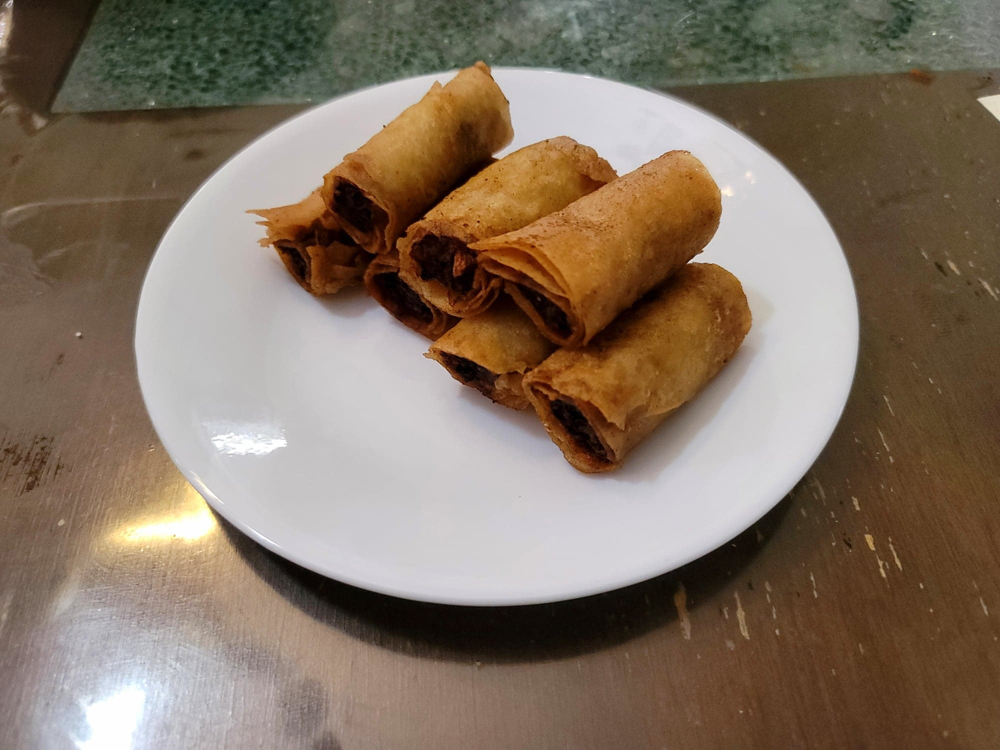

Lumpiang Shanghai

Ingredients:
- 1 lb Ground pork
- 1/2 cup Scallions, very finely sliced
- 1 8 oz can Water chestnuts, drained, minced
- 1 medium Carrot, shredded
- 3 cloves Garlic, minced
- 1 tbsp Soy sauce
- 1/2 - 3/4 tsp Salt, or to taste
- 1/2 tsp Black pepper
- 20~ Lumpia wrappers
- Oil, for frying
- Recommended: Sweet chili sauce, for dipping
Instructions:
- Add the pork, scallions, water chestnuts, carrot, garlic, soy sauce, salt, and black pepper and mix to combine. Optionally, fry a little bit of the mixture and taste to adjust for seasonings.
- Separate the lumpia wrappers. Take 1 wrapper and place 1 heaping tbsp of the filling onto the lower half of the wrapper. Form the filling into a line and fold the bottom of wrapper over filling and continue to roll tightly into a roughly 3/4 inch thick log. Repeat for the rest of the wrappers and filling.
- Cut each lumpia roll into 3 inch segments. Optionally, freeze the lumpia and save for later. (Even if not saving for later, freezing the lumpia is recommended as it will help to keep the filling inside as it fries)
- Heat 2 inches of oil to 350 degrees Fahrenheit. Add the lumpia in batches and fry for about 4-5 minutes, or until golden brown and cooked completely.
- Remove from the oil and place onto a wire rack to cool and to remove excess oil. Serve immediately with sweet chili dipping sauce.